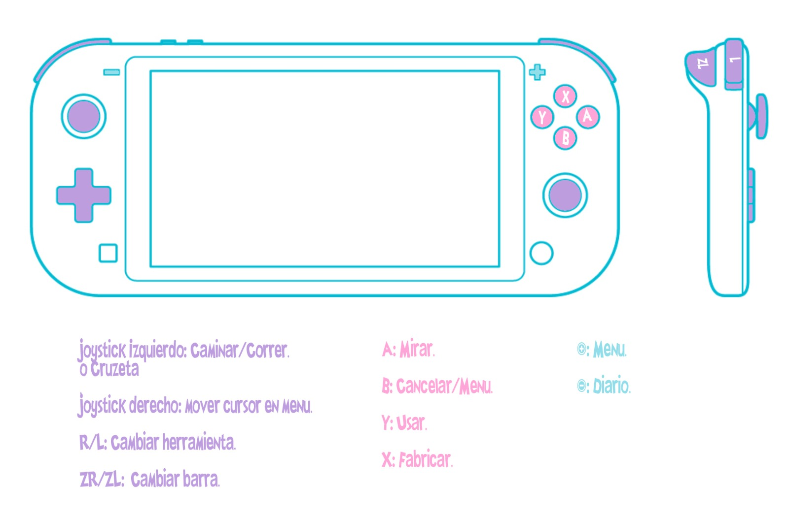

Los controles los distinguimos entre los de el mando de Nintendo Switch y los de teclado de ordenador que serán las dos plataformas donde se podrá encontrar este juego.
Para el mando de Nintendo Switch como vemos en la imagen caminaremos con el joystick izquierdo, mientras que con el derecho podemos desplazarnos por el menú, al cual podremos acceder pulsando el botón “+”. Con R1 cambiaremos de herramienta, y con ZR o ZL nos moveremos por la barra de objetos. Por último, en la parte derecha de la consola tenemos los botones A, que nos permite interactuar, B, que cancela acciones o entra en el menú, Y, con el que usaremos objetos, y X para fabricar diferentes objetos.
En el caso de jugar con el teclado de ordenador podemos movernos mediante las teclas W,A,S,D. Usaremos las herramientas o colocaremos un objeto con el click izquierdo o C, también podremos realizar una acción mediante el click derecho o X. Para abrir el menú también tendremos dos opciones ya que podremos entrar pulsando “Esc” o E. La versión de ordenador nos incluye un atajo que no encontramos con el botón de switch y es que pulsando la M podremos acceder al mapa. Por último, la barra de objetos también puede ser desplazada con Tab.
Este tipo de videojuegos tiene una característica muy común y es que hay dos formas de guardado. Una de esas formas es mediante un autoguardado programado cada vez que pasa un día del juego. En Town of memories además del autoguardado cada vez que el jugador lo desee podrá guardar desde el menú, permitiendo al jugador que pueda guardar su partida cuando desee desde el momento que lo dejo.
Town of Memories está pensado para ser jugado tanto individualmente como en un modo multijugador cooperativo. En un inicio el juego solo podrá ser accesible para un jugador, pero con la intencionalidad de añadir en una futura versión el modo multijugador, compatible en todo momento con este género.
Como ya hemos comentado el modo multijugador será cooperativo y cada jugador disfrutará de la partida desde su propia pantalla, dándoles mayor libertad a sus acciones. Otro elemento que se desea añadir al videojuego es el crossplay para que los jugadores puedan continuar sus partidas desde las diferentes plataformas en las que el videojuego está disponible, es decir, Nintendo Switch y Microsoft Windows.
El juego transcurrirá durante 4 estaciones: primavera, verano, otoño e invierno. Como podremos observar son las mismas estaciones que conocemos, buscando que el jugador se encuentre más familiarizado con las temporadas. En cada estación el jugador se tendrá que adaptar a los diferentes cultivos según la temporada y clima, ya que cada temporada tendrá unos cultivos específicos que solo crecerán en ella.
La historia empieza en primavera, esto es habitual en numerosos juegos incluso fuera de este género debido a que es una de las estaciones que más facilitan al jugador el progreso. Cada temporada tendrá un total de 30 días, donde podremos ver los efectos de cada temporada. En primavera y otoño habrá numerosos días de lluvia, en verano días soleados y en invierno estará nevando todos los días, haciendo que la experiencia sea un poco más real para el jugador.
Como ya he dicho cada temporada tendrá diferentes cultivos, para la elección de estos he realizado un pequeño estudio de qué frutas crecen en las diferentes temporadas del juego e intentando que no coincidiera con las frutas que se encuentran normalmente en este tipo de juegos. Los cultivos elegidos son:
Primavera: La primera estación jugable, podremos ir a la tienda donde se venden semillas de arándanos, kiwis y pomelos. Estas serán las menos costosas ya que serán compradas al inicio del juego.
Verano: En esta estación recordemos que no habrá lluvias y las semillas que podremos comprar serán de sandía, fresas y melones.
Otoño: Será habitual que caiga más de un chubasco en esta estación, por lo que en la tienda encontraremos semillas de uvas, granada y chirimoya.
Invierno: Esta temporada es totalmente diferente ya que no podremos plantar ningún cultivo debido a las altas temperaturas y la nieve, pero se desbloquea la posibilidad de comprar las semillas de dos tipos de árboles, cocos y plátanos. Estas frutas son anuales, por lo que una vez crezcan los árboles dan frutos durante todo el año.
Cocina:La habilidad de cocina se irá incrementando cada vez que el jugador realice distintos platos. Cuando esta vaya subiendo se desbloquearan distintas recetas más avanzadas que podrán ayudar al jugar con bonificaciones.
Pesca: Habilidad que puede subir a medida que el jugador vaya pescando en el río o lagos, obteniendo objetos y peces muy útiles para cocinar recetas.
Cultivo:Los cultivos son uno de los métodos más eficientes para conseguir dinero, por lo que el jugador debe cultivar diferentes semillas a medida que van pasando las estaciones..
Recolección:Cada vez que el jugador recoge los cultivos su habilidad de recolección aumentará.
adipiscing elit, sed do eiusmod tempor incididunt ut
labore et dolore magna aliqua.